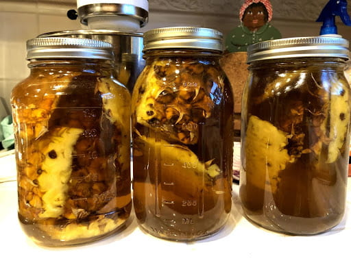

Home
Tepache

Fermenting tepache from pinapple skins
Ever feel like you are wasting pinapple because of too much trim. Well, you're in luck.Today I will show you how to turn your trim into a Mexcian refreshment ,in a couple of days.
Ingredients
- water
- Pinapple
- Brown sugar
- Glass Jar
Steps
- 3-4 pinapple scraps in a 32oz jar
- fill the jar with water and add 1/4 cup sugar
- The next couple of days, shake the jar and unscrew the lid to let some of the carbination out.
- In two days you should see lots of bubbling, and this lets you know that your ferment is ready! This process could take longer due to the changing climate or temperature of your environment, but just keep waiting and stirring the mixture until you see some bubbling!
- Once there is a lot of bubbling, strain the mixture. You can refrigerate the drink overnight, and in the morning you’ll have a fresh cup of tepache!